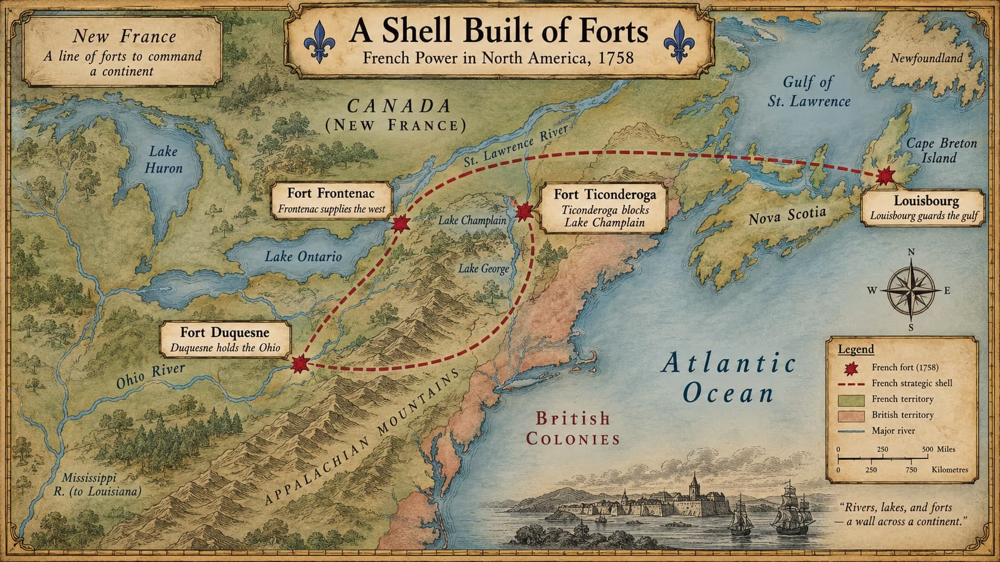
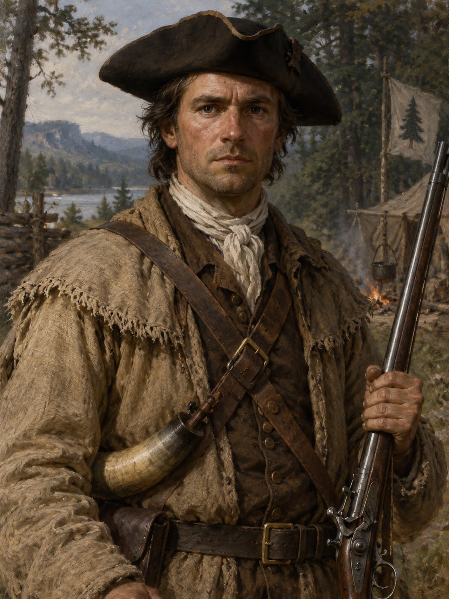

Britain Wins a Continent, 1758 to 1763.
November. The French burn Fort Duquesne and walk away.
Britain holds the Forks of the Ohio.
So Why Isn't the War Over?
Britain now has
- The Forks of the Ohio
- A new post: Fort Pitt
- The land the war started over
France still has
- Quebec
- Montreal
- The St. Lawrence — the heart of New France
And the fighting stretches far beyond this continent.
Our question today
Britain wins what earlier wars did not: a continent.
That victory transforms the map — and creates a harder problem.
Keep the map in your head. Then ask who has the authority to redraw it.
Part One
Why Britain Is Suddenly Winning
1755–1757: everything and nothing
Britain had the advantages the whole time. Something changed in how it used them.
Britain Had Every Advantage
And yet
From 1755 to 1757, Britain kept losing.
The Problem Wasn't Only Military
British commanders were fighting the colonies as well as the French.
- Who outranks whom
- Length of enlistment
- Discipline and punishment
- Quartering troops
- Money and supplies
- The authority of colonial assemblies
What Pitt Actually Did
- Backed down on questions of rank
- Let provincial troops serve under their own officers
- Asked assemblies to raise men and supplies
- Promised Britain would pay them back
- Poured British resources into North America
 A later state portrait of Pitt — painted to show a statesman, not the harried minister of 1757 who had to bargain with thirteen assemblies.
A later state portrait of Pitt — painted to show a statesman, not the harried minister of 1757 who had to bargain with thirteen assemblies.
Colonial Participation Surges
Britain always had more. Pitt made those advantages usable.
And the Goal Changes
Defend British America
Conquer New France
Pressure everywhere at once: the Atlantic approaches, the interior forts, Lake Champlain, and finally the St. Lawrence itself.
Part Two
Native Nations Reconsider the War
1758: the alliance that stopped paying
France was outnumbered from the beginning. Native allies were how it survived anyway.
An Uneasy Accommodation, 1758
- British and colonial officials negotiate with western Native peoples
- Quaker mediators help broker the talks
- Britain buys peace with one promise:
Remember that promise. It will matter more in 1763 than it did in 1758.
Why the French Alliance Stopped Paying
- French goods and gifts run short
- Native leaders doubt France can win
- Less willingness to fight other Native peoples for European quarrels
Senecas fighting with France and Mohawks fighting with Britain begin avoiding each other — the first stirrings of a pan-Indian identity.
They did not "switch sides"
Native nations kept pursuing their own interests. Britain was simply, for the moment, the better bet.
When the alliances weakened, the arithmetic came back.
Recall Lecture 2: the Ohio Country was never an empty prize or a population waiting to be assigned to an empire.
Part Three
The Outer Defenses Collapse
1758
Watch the map from the outside in: first the shell, then the approaches, then the heart.

French power in North America, 1758 — a strategic shell connected by rivers, lakes, forts, and alliances.A Shell Built of Forts
- Louisbourg guards the gulf
- Frontenac supplies the west
- Duquesne holds the Ohio
- Ticonderoga blocks Lake Champlain
1758: The Outer Defenses Crack
Louisbourg
Falls to Amherst and Wolfe. The river road to Quebec opens.
Frontenac
Its fall cuts the supply route west. The Ohio position collapses.
Ticonderoga
A costly British defeat: resources still needed capable leadership.
1759: The British Close In
West
Provincial forces take Fort Niagara
South
Amherst takes Ticonderoga and Crown Point — the Champlain route opens
East
James Wolfe sails up the St. Lawrence toward Quebec
A war over forts and western claims has become a campaign against a capital.
Quebec: The Last Fortress
- Quebec sits on cliffs above the river
- Geography does most of the defending
- Defended by the Marquis de Montcalm
How Wolfe applies pressure
British guns bombard the city while troops burn farms around it. Conquest means destroying civilian resources as well as attacking defenses.
 A British engraving published to celebrate the victory. Notice how much of it is ships — the fleet is the argument.
A British engraving published to celebrate the victory. Notice how much of it is ships — the fleet is the argument.
September 13, 1759
Winter is coming. The fleet cannot stay in the river. Wolfe is running out of time.
Quebec Was Famous. Montreal Ended It.
Quebec
The famous battle of 1759 — but not the surrender of Canada.
Montreal
British armies converge in 1760. Montreal falls; Canada surrenders.
The war in North America is not over at Quebec. Keep the 1760 surrender in view.
Part Four
From the Ohio Valley to a World War
1760–1763
Canada falls — and the war keeps going, because the war was never only here.
Still a World War
The Seven Years' War is being fought across Europe, the Caribbean, Africa, India, and the oceans between them.
1763: Redrawing North America
Britain gains
- Canada
- French claims east of the Mississippi (except New Orleans)
- Florida, from Spain
France keeps
- Martinique
- Guadeloupe
Spain gains
- New Orleans
- Louisiana west of the Mississippi
Britain handed back the sugar islands. They were worth that much.
 The continent after the Peace of Paris. Compare it with the map from Part Three — the French color is simply gone.
The continent after the Peace of Paris. Compare it with the map from Part Three — the French color is simply gone.
France Disappears
Three earlier wars left this map essentially intact. This one erased a color from it.
Victory Looks Different from the Colonies
British Americans celebrate. They expect:
- Security on the frontier
- Prosperity
- Western land
- Room to expand
- Reward for having helped win

A colonial militiaman — a reminder that many British Americans saw themselves as partners in victory.Native Nations Reject the Peace
European diplomats treated Native homelands as something France could hand over.
France, they argued, could not give away what France had never owned. The political world of the “Republics” had not disappeared because a European treaty said it had.
The Old Balance Is Gone
Before 1763
Britain ⟵ Native nations ⟶ France
- Play one empire against the other
- Threaten to shift alliances
- Demand gifts and trade
After 1763
British Empire ⟷ Native nations
- No second empire to bargain with
- Far less room to maneuver
So notice the direction
The continent after 1763 is less stable, not more.
They Won the Same War and Learned Different Lessons
Colonists remember
- Their soldiers
- Their money and supplies
- Years of frontier war
- Being partners in victory
British officials remember
- Colonial foot-dragging
- Fights over men and money
- Thirteen governments to coordinate
- That regulars, money, and the navy won it
The Paradox of Victory
Britain's winning strategy ran on cooperation and consent.
Land
Colonists expect to move west. Native nations say the land is theirs.
Security
An enormous new empire to defend, administer, and supply.
Money
The war was ruinously expensive. Holding the winnings will cost more.
Can a larger, more expensive empire keep being run through consent? British policymakers are about to answer no.
Chapter 4: Why Victory Became a Problem
Freedom had competing meanings
At Mose, freedom could mean escape from British slavery. For colonial assemblies, it could mean consent and local control.
Native sovereignty persisted
The Republics had shown that Native nations governed the Ohio Country. The Peace of 1763 did not erase their claims or independence.
Authority now faced a larger test
The Great Awakening made inherited authority open to judgment; victory gave Britain a larger, costlier empire and asked colonists to obey it.
Britain won the continent in 1763.
It did not win the right to govern everyone living on it.
Next: Native resistance, the Proclamation of 1763, and the argument over what the colonies owe the empire.
Online Hour
Independent Study
Six extensions and a vocabulary sheet
Want to Go Deeper material. Not assessed — read it because it makes the classroom hour make more sense.
Canada or Guadeloupe?
In 1763 Britain gave Martinique and Guadeloupe back to France and kept Canada instead.
Ask yourself: what does it tell you about eighteenth-century empire that keeping a continent was the debatable option?
The Promise Made in 1758
Britain secured peace with western Native peoples partly by promising not to seize their lands after the war.
Follow that thread into the next lecture. It does not end quietly.
Ticonderoga, 1758: When Numbers Lose
Abercrombie had the larger army and attacked prepared French field works head-on. The result was a British disaster.
Use it as a test case
If superior resources decided wars, Britain would have won in 1755. It didn't — and here it lost with the bigger force.
How the Fort Campaign Worked
The St. Lawrence approach opens.
French western posts lose their supply route.
Britain takes the Forks of the Ohio.
The 1758 victories mattered because each one made the next French position harder to hold.
Who Paid for Pitt's War?
- Pitt asked colonial assemblies to raise men and supplies
- Britain promised substantial reimbursement
- Britain committed enormous resources to the theater
Spain Enters — 1762
- Spain stays neutral through most of the war
- It joins after France has effectively lost Canada
- Britain captures Havana and Manila
Vocabulary
Forks of the Ohio — Junction of the Allegheny and Monongahela; the strategic prize the war began over.
Fort Duquesne / Fort Pitt — The French post at the Forks, burned in 1758, replaced by a British one.
Provincial troops — Soldiers raised by colonial assemblies, distinct from British regulars.
Louisbourg — French fortress guarding the Gulf of St. Lawrence; taken 1758.
Pan-Indian identity — An emerging sense of shared interests among Native nations across tribal lines.
Plains of Abraham — The plateau above Quebec where the decisive battle was fought, 13 September 1759.
Seven Years' War — The global conflict of which the French and Indian War was the North American theater.
Peace of Paris (1763) — The settlement that removed France as a mainland territorial power.
Every term above has a pop-up definition on the slide where it first appears. Click the gold dotted words.